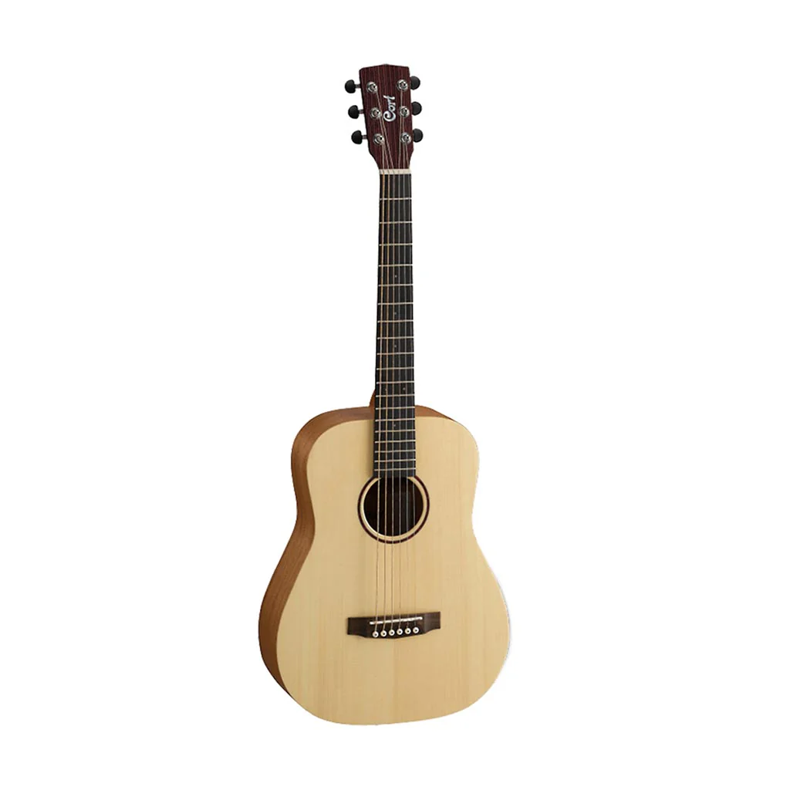

Store

Retro Steampunk Table Lamp
Vintage industrial metal water pipe lamp
Vintage Indian Ceramic Pickle Jar
Hand-painted orange and green jar
Vintage Mini Tea Set Porcelain
13-piece floral porcelain set
Infityle Classic Retro Game Console
620 games, 8-bit video console
Mini Classic Game Machine
26 games with keychain console

In the Night Garden Talking Makka Pakka
Soft and cuddly Makka Pakka plush

Antique Audio Wind-up Gramophone
Wooden gramophone with wind-up mechanism

Vintage Metal Tin Canister
Vintage tin canister with strawberry design
RETRO-1532 Guitar
Rare vintage guitar with rich tone
Vintage Band T-Shirt
Stylish band logo design shirt

Earth Mini Guitar
Compact, portable guitar with great sound